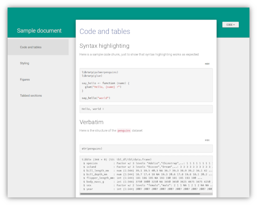

---
title: "Test R Markdown"
---
*R Markdown* permet de mélanger :
- du texte libre mis en forme
- des blocs de code R
Les blocs de code sont exécutés et leur résultat affiché, par exemple :
```{r}
mean(mtcars$mpg)
```
## Graphiques
On peut également inclure des graphiques :
```{r}
plot(mtcars$hp, mtcars$mpg)
```13 Diffuser et publier avec rmarkdown
L’extension rmarkdown permet de générer des documents de manière dynamique en mélangeant texte mis en forme et résultats produits par du code R. Les documents générés peuvent être au format HTML, PDF, Word, et bien d’autres1. C’est donc un outil très pratique pour l’exportation, la communication et la diffusion de résultats d’analyse.
rmarkdown ne fait pas partie du tidyverse, mais elle est installée et chargée par défaut par RStudio2.
Voici un exemple de document R Markdown minimal :
Ce document peut être “compilé” sous différents formats. Lors de cette étape, le texte est mis en forme, les blocs de code sont exécutés, leur résultat ajouté au document, et le tout est transformé dans un des différents formats possibles.
Voici le rendu du document précédent au format HTML :

Le rendu du même document au format PDF :

Et le rendu au format docx :

Les avantages de ce système sont nombreux :
- le code et ses résultats ne sont pas séparés des commentaires qui leur sont associés
- le document final est reproductible
- le document peut être très facilement régénéré et mis à jour, par exemple si les données source ont été modifiées.
13.1 Créer un nouveau document
Un document R Markdown est un simple fichier texte enregistré avec l’extension .Rmd.
Sous RStudio, on peut créer un nouveau document en allant dans le menu File puis en choisissant New file puis R Markdown…. La boîte de dialogue suivante s’affiche :

On peut indiquer le titre, l’auteur du document ainsi que le format de sortie par défaut (il est possible de modifier facilement ces éléments par la suite). Plutôt qu’un document classique, on verra Section 13.6 qu’on peut aussi choisir de créer une présentation sous forme de slides (entrée Presentation) ou de créer un document à partir d’un modèle (Entrée From Template).
Un fichier comportant un contenu d’exemple s’affiche alors. Vous pouvez l’enregistrer où vous le souhaitez avec une extension .Rmd.
13.2 Éléments d’un document R Markdown
Un document R Markdown est donc un fichier texte qui ressemble à quelque chose comme ça :
---
title: "Titre"
author: "Prénom Nom"
date: "10 avril 2017"
output: html_document
---
```{r setup, include=FALSE}
knitr::opts_chunk$set(echo = TRUE)
```
## Introduction
Ceci est un document RMarkdown, qui mélange :
- du texte balisé selon la syntaxe Markdown
- des bouts de code R qui seront exécutés
Le code R se présente de la manière suivante :
```{r}
summary(cars)
```
## Graphiques
On peut aussi inclure des graphiques, par exemple :
```{r}
plot(pressure)
```On va décomposer les différents éléments constitutifs de ce document.
13.2.1 En-tête (préambule)
La première partie du document est son en-tête. Il se situe en tout début de document, et est délimité par trois tirets (---) avant et après :
---
title: "Titre"
author: "Prénom Nom"
date: "10 avril 2017"
output: html_document
---Cet en-tête contient les métadonnées du document, comme son titre, son auteur, sa date, plus tout un tas d’options possibles qui vont permettre de configurer ou personnaliser l’ensemble du document et son rendu. Ici, par exemple, la ligne output: html_document indique que le document généré doit être au format HTML.
13.2.2 Texte du document
Le corps du document est constitué de texte qui suit la syntaxe Markdown. Un fichier Markdown est un fichier texte contenant un balisage léger qui permet de définir des niveaux de titres ou de mettre en forme le texte. Par exemple, le texte suivant :
Ceci est du texte avec *de l'italique* et **du gras**.
On peut définir des listes à puces :
- premier élément
- deuxième élémentGénèrera le texte mis en forme suivant :
Ceci est du texte avec de l’italique et du gras.
On peut définir des listes à puces :
- premier élément
- deuxième élément
On voit que des mots placés entre des astérisques sont mis en italique, des lignes qui commencent par un tiret sont transformés en liste à puce, etc.
On peut définir des titres de différents niveaux en faisant débuter une ligne par un ou plusieurs # :
# Titre de niveau 1
## Titre de niveau 2
### Titre de niveau 3Quand des titres ont été définis, si vous cliquez sur l’icône Show document outline totalement à droite de la barre d’outils associée au fichier R Markdown, une table des matières générée automatiquement à partir des titres s’affiche et vous permet de naviguer facilement dans le document :

La syntaxe Markdown permet d’autres mises en forme, comme la possibilité d’insérer des liens ou des images. Par exemple, le code suivant :
[Exemple de lien](https://example.com)Donnera le lien suivant :
Dans RStudio, le menu Help puis Markdown quick reference donne un aperçu plus complet de la syntaxe.
13.2.3 Blocs de code R
En plus du texte libre au format Markdown, un document R Markdown contient, comme son nom l’indique, du code R. Celui-ci est inclus dans des blocs (chunks) délimités par la syntaxe suivante :
```{r}
x <- 1:5
```Comme cette suite de caractères n’est pas très simple à saisir, vous pouvez utiliser le menu Insert de RStudio et choisir R3, ou utiliser le raccourci clavier Ctrl+Alt+i.

Dans RStudio les blocs de code R sont en général affichés avec une couleur de fond légèrement différente pour les distinguer du reste du document.
Quand votre curseur se trouve dans un bloc, vous pouvez saisir le code R que vous souhaitez, l’exécuter, utiliser l’autocomplétion, exactement comme si vous vous trouviez dans un script R. Vous pouvez également exécuter l’ensemble du code contenu dans un bloc à l’aide du raccourci clavier Ctrl+Maj+Entrée.
Dans RStudio, par défaut, les résultats d’un bloc de code (texte, tableau ou graphique) s’affichent directement dans la fenêtre d’édition du document, permettant de les visualiser facilement et de les conserver le temps de la session 4.
Lorsque le document est “compilé” au format HTML, PDF ou docx, chaque bloc est exécuté tour à tour, et le résultat inclus dans le document final, qu’il s’agisse de texte, d’un tableau ou d’un graphique. Les blocs sont liés entre eux, dans le sens où les données importées ou calculées dans un bloc sont accessibles aux blocs suivants. On peut donc aussi voir un document R Markdown comme un script R dans lequel on aurait intercalé du texte libre au format Markdown.
Note
À noter qu’avant chaque compilation, une nouvelle session R est lancée, ne contenant aucun objet. Les premiers blocs de code d’un document sont donc souvent utilisés pour importer des données, exécuter des recodages, etc.
13.2.4 Compiler un document (Knit)
On peut à tout moment compiler, ou plutôt “tricoter” (Knit), un document R Markdown pour obtenir et visualiser le document généré. Pour cela, il suffit de cliquer sur le bouton Knit et de choisir le format de sortie voulu :

Vous pouvez aussi utiliser le raccourci Ctrl+Maj+K pour compiler le document dans le dernier format utilisé.
Avertissement
Pour la génération du format PDF, vous devez avoir une installation fonctionnelle de LaTeX sur votre système.
Si ça n’est pas le cas, l’extension tinytex de Yihui Xie vise à faciliter l’installation d’une distribution LaTeX minimale quel que soit le système d’exploitation de votre machine. Pour l’utiliser il vous faut d’abord installer l’extension avec install.packages('tinytex'), puis lancer la commande suivante dans la console (prévoir un téléchargement d’environ 200Mo) :
tinytex::install_tinytex()
Plus d’informations sur le site de tinytex.
Un onglet R Markdown s’ouvre dans la même zone que l’onglet Console et indique la progression de la compilation, ainsi que les messages d’erreur éventuels. Si tout se passe bien, Le document devrait s’afficher soit dans une fenêtre Viewer de RStudio (pour la sortie HTML), soit dans le logiciel par défaut de votre ordinateur.
13.3 Personnaliser le document généré
La personnalisation du document généré se fait en modifiant des options dans le préambule du document. RStudio propose néanmoins une petite interface graphique permettant de changer ces options plus facilement. Pour cela, cliquez sur l’icône en forme d’engrenage à droite du bouton Knit et choisissez Output Options…

Une boîte de dialogue s’affiche vous permettant de sélectionner le format de sortie souhaité et, selon le format, différentes options :

Pour le format HTML par exemple, l’onglet General vous permet de spécifier si vous voulez une table des matières, sa profondeur, les thèmes à appliquer pour le document et la coloration syntaxique des blocs R, etc. L’onglet Figures vous permet de changer les dimensions par défaut des graphiques générés.
Note
Une option très intéressante pour les fichiers HTML, accessible via l’onglet Advanced, est l’entrée Create standalone HTML document. Si elle est cochée (ce qui est le cas par défaut), le document HTML généré contiendra en un seul fichier le code HTML mais aussi les images et toutes les autres ressources nécessaires à son affichage. Ceci permet de générer des fichiers (parfois assez volumineux) que vous pouvez transférer très facilement à quelqu’un par mail ou en le mettant en ligne quelque part. Si la case n’est pas cochée, les images et autres ressources sont placées dans un dossier à part.
Lorsque vous changez des options, RStudio va en fait modifier le préambule de votre document. Ainsi, si vous choisissez d’afficher une table des matières et de modifier le thème de coloration syntaxique, votre en-tête va devenir quelque chose comme :
---
title: "Test R Markdown"
output:
html_document:
highlight: kate
toc: yes
---Vous pouvez modifier les options directement en éditant le préambule.
À noter qu’il est possible de spécifier des options différentes selon les formats, par exemple :
---
title: "Test R Markdown"
output:
html_document:
highlight: kate
toc: yes
pdf_document:
fig_caption: yes
highlight: kate
---La liste complète des options possibles est présente sur le site de la documentation officielle (très complet et bien fait) et sur l’antisèche et le guide de référence, accessibles depuis RStudio via le menu Help puis Cheatsheets.
13.4 Options des blocs de code R
Il est également possible de passer des options à chaque bloc de code R pour modifier son comportement.
On rappelle qu’on bloc de code se présente de la manière suivante :
```{r}
x <- 1:5
```Les options d’un bloc de code sont à placer à l’intérieur des accolades {r}.
13.4.1 Nom du bloc
La première possibilité est de donner un nom au bloc. Celui-ci est indiqué directement après le r :
{r nom_du_bloc}
Il n’est pas obligatoire de nommer un bloc, mais cela peut être utile en cas d’erreur à la compilation, pour identifier le bloc ayant causé le problème. Attention, on ne peut pas avoir deux blocs avec le même nom.
13.4.2 Options
En plus d’un nom, on peut passer à un bloc une série d’options sous la forme option = valeur. Voici un exemple de bloc avec un nom et des options :
```{r mon_bloc, echo = FALSE, warning = TRUE}
x <- 1:5
```Et un exemple de bloc non nommé avec des options :
```{r echo = FALSE, warning = FALSE}
x <- 1:5
```Une des options utiles est l’option echo. Par défaut echo vaut TRUE, et le bloc de code R est inséré dans le document généré, de cette manière :
x <- 1:5
print(x)
#> [1] 1 2 3 4 5Mais si on positionne l’option echo=FALSE, alors le code R n’est plus inséré dans le document, et seul le résultat est visible :
#> [1] 1 2 3 4 5Voici une liste de quelques unes des options disponibles :
| Option | Valeurs | Description |
|---|---|---|
| echo | TRUE/FALSE | Afficher ou non le code R dans le document |
| eval | TRUE/FALSE | Exécuter ou non le code R à la compilation |
| include | TRUE/FALSE | Inclure ou non le code R et ses résultats dans le document |
| results | “hide”/“asis”/“markup”/“hold” | Type de résultats renvoyés par le bloc de code |
| warning | TRUE/FALSE | Afficher ou non les avertissements générés par le bloc |
| message | TRUE/FALSE | Afficher ou non les messages générés par le bloc |
Il existe de nombreuses autres options décrites notamment dans guide de référence R Markdown (PDF en anglais).
13.4.3 Modifier les options
Il est possible de modifier les options manuellement en éditant l’en-tête du bloc de code, mais on peut aussi utiliser une petite interface graphique proposée par RStudio. Pour cela, il suffit de cliquer sur l’icône d’engrenage située à droite sur la ligne de l’en-tête de chaque bloc :

Vous pouvez ensuite modifier les options les plus courantes, et cliquer sur Apply pour les appliquer.
13.4.4 Options globales
On peut vouloir appliquer une option à l’ensemble des blocs d’un document. Par exemple, on peut souhaiter par défaut ne pas afficher le code R de chaque bloc dans le document final.
On peut positionner une option globalement en utilisant la fonction knitr::opts_chunk$set(). Par exemple, insérer knitr::opts_chunk$set(echo = FALSE) dans un bloc de code positionnera l’option echo = FALSE par défaut pour tous les blocs suivants.
En général, on place toutes ces modifications globales dans un bloc spécial nommé setup et qui est le premier bloc du document :
```{r setup, include=FALSE}
knitr::opts_chunk$set(echo = TRUE)
```
Note
Par défaut RStudio exécute systématiquement le contenu du bloc setup avant d’exécuter celui d’un autre bloc.
Contrairement aux autres blocs de code, quand on utilise dans RStudio le menu des paramètres du bloc setup pour modifier ses options, celles-ci modifient non pas les options de ce bloc mais les options globales, en mettant à jour l’appel de la fonction knitr::opts_chunk$set().
13.4.5 Mise en cache des résultats
Compiler un document R Markdown peut être long, car il faut à chaque fois exécuter l’ensemble des blocs de code R qui le constituent.
Pour accélérer cette opération, R Markdown utilise un système de mise en cache : les résultats de chaque bloc sont enregistrés dans un fichier et à la prochaine compilation, si le code et les options du bloc n’ont pas été modifiés, c’est le contenu du fichier de cache qui est utilisé, ce qui évite d’exécuter le code R.
Note
On peut activer ou désactiver la mise en cache des résultats pour chaque bloc de code avec l’option cache = TRUE ou cache = FALSE, et on peut aussi désactiver totalement la mise en cache pour le document en ajoutant knitr::opts_chunk$set(cache = FALSE) dans le premier bloc setup.
Ce système de cache peut poser problème par exemple si les données source changent : dans ce cas les résultats de certains blocs peuvent ne pas être mis à jour s’ils sont présents en cache. Dans ce cas, on peut vider le cache du document, ce qui forcera un recalcul de tous les blocs de code à la prochaine compilation. Pour cela, vous pouvez ouvrir le menu Knit et choisir Clear Knitr Cache… :
13.5 Rendu des tableaux
13.5.1 Tableaux croisés
Par défaut, les tableaux issus de la fonction table sont affichés comme ils apparaissent dans la console de R, en texte brut :
library(questionr)
data(hdv2003)
tab <- lprop(table(hdv2003$qualif, hdv2003$sexe))
tab
#>
#> Homme Femme Total
#> Ouvrier specialise 47.3 52.7 100.0
#> Ouvrier qualifie 78.4 21.6 100.0
#> Technicien 76.7 23.3 100.0
#> Profession intermediaire 55.0 45.0 100.0
#> Cadre 55.8 44.2 100.0
#> Employe 16.2 83.8 100.0
#> Autre 36.2 63.8 100.0
#> All 44.8 55.2 100.0On peut améliorer leur présentation en utilisant la fonction kable de l’extension knitr. Celle-ci fournit un formatage adapté en fonction du format de sortie. On aura donc des tableaux “propres” que ce soit en HTML, PDF ou aux formats traitements de texte :
library(knitr)
kable(tab)| Homme | Femme | Total | |
|---|---|---|---|
| Ouvrier specialise | 47.29064 | 52.70936 | 100 |
| Ouvrier qualifie | 78.42466 | 21.57534 | 100 |
| Technicien | 76.74419 | 23.25581 | 100 |
| Profession intermediaire | 55.00000 | 45.00000 | 100 |
| Cadre | 55.76923 | 44.23077 | 100 |
| Employe | 16.16162 | 83.83838 | 100 |
| Autre | 36.20690 | 63.79310 | 100 |
| All | 44.82759 | 55.17241 | 100 |
Différents arguments permettent de modifier la sortie de kable. digits, par exemple, permet de spécifier le nombre de chiffres significatifs à afficher dans les colonnes de nombres :
kable(tab, digits = 1)| Homme | Femme | Total | |
|---|---|---|---|
| Ouvrier specialise | 47.3 | 52.7 | 100 |
| Ouvrier qualifie | 78.4 | 21.6 | 100 |
| Technicien | 76.7 | 23.3 | 100 |
| Profession intermediaire | 55.0 | 45.0 | 100 |
| Cadre | 55.8 | 44.2 | 100 |
| Employe | 16.2 | 83.8 | 100 |
| Autre | 36.2 | 63.8 | 100 |
| All | 44.8 | 55.2 | 100 |
13.5.2 Tableaux de données et tris à plat
En ce qui concerne les tableaux de données (tibble ou data frame), l’affichage HTML par défaut se contente d’un affichage texte comme dans la console, très peu lisible dès que le tableau dépasse une certaine taille.
Une alternative est d’utiliser la fonction paged_table, qui affiche une représentation HTML paginée du tableau :

paged_tableUne alternative est d’utiliser kable, comme précédemment pour les tableaux croisés, ou encore la fonction datatable de l’extension DT, qui propose encore davantage d’interactivité :

DT::datatableDans tous les cas il est déconseillé d’afficher de cette manière un tableau de données de très grandes dimensions, car le fichier HTML résultant contiendrait l’ensemble des données et serait donc très volumineux.
Note
On peut définir un mode d’affichage par défaut pour tous les tableaux de données en modifiant les Output options du format HTML (onglet General, Print dataframes as), ou en modifiant manuellement l’option df_print de l’entrée html_document dans le préambule.
À noter que les tableaux issus de la fonction freq de questionr s’affichent comme des tableaux de données (et non comme des tableaux croisés).
13.6 Modèles de documents
On a vu ici la production de documents “classiques”, mais R Markdown permet de créer bien d’autres choses.
Le site de documentation de l’extension propose une galerie des différentes sorties possibles. On peut ainsi créer des slides, des sites Web ou même des livres entiers, comme le présent document.
13.6.1 Slides
Un usage intéressant est la création de diaporamas pour des présentations sous forme de slides. Le principe reste toujours le même : on mélange texte au format Markdown et code R, et R Markdown transforme le tout en présentations au format HTML ou PDF. En général les différents slides sont séparés au niveau de certains niveaux de titre.
Certains modèles de slides sont inclus avec R Markdown, notamment :
ioslidesetSlidypour des présentations HTMLbeamerpour des présentations en PDF viaLaTeX
Quand vous créez un nouveau document dans RStudio, ces modèles sont accessibles via l’entrée Presentation :

D’autres extensions, qui doivent être installées séparément, permettent aussi des diaporamas dans des formats variés. On citera notamment :
- xaringan pour des présentations HTML basées sur remark.js
- revealjs pour des présentations HTML basées sur reveal.js
- rmdshower pour des diaporamas HTML basés sur shower
Une fois l’extension installée, elle propose en général un template de départ lorsqu’on crée un nouveau document dans RStudio. Ceux-ci sont accessibles depuis l’entrée From Template.

13.6.2 Templates
Il existe également différents templates permettant de changer le format et la présentation des documents générés. Une liste de ces formats et leur documentation associée est accessible depuis la page formats de la documentation.
On notera notamment :
- le format Distill, adapté à des publications scientifiques ou techniques sur le Web
- le format Tufte Handouts qui permet de produire des documents PDF ou HTML dans un format proche de celui utilisé par Edward Tufte pour certaines de ses publications
- rticles, package qui propose des templates LaTeX pour plusieurs revues scientifiques
Enfin, l’extension rmdformats propose plusieurs modèles HTML adaptés notamment pour des documents longs :

readthedown
downcute
robobook
materialLà encore, la plupart du temps, ces modèles de documents proposent un template de départ lorsqu’on crée un nouveau document dans RStudio (entrée From Template) :
13.7 Ressources
Les ressources suivantes sont toutes en anglais…
L’ouvrage R for data science, accessible en ligne, contient un chapitre dédié à R Markdown.
Le site officiel de l’extension contient une documentation très complète, tant pour les débutants que pour un usage avancé.
Enfin, l’aide de RStudio (menu Help puis Cheatsheets) permet d’accéder à deux documents de synthèse : une “antisèche” synthétique (R Markdown Cheat Sheet) et un “guide de référence” plus complet (R Markdown Reference Guide).
On peut citer les formats
odt,rtf, Markdown, etc.↩︎Si vous n’utilisez pas ce dernier, l’extension peut être installée à part avec
install.packages("rmarkdown")et chargée explicitement aveclibrary(rmarkdown).↩︎Il est possible d’inclure dans un document R Markdown des blocs de code d’autres langages↩︎
Ce comportement peut être modifié en cliquant sur l’icône d’engrenage de la barre d’outils et en choisissant Chunk Output in Console↩︎